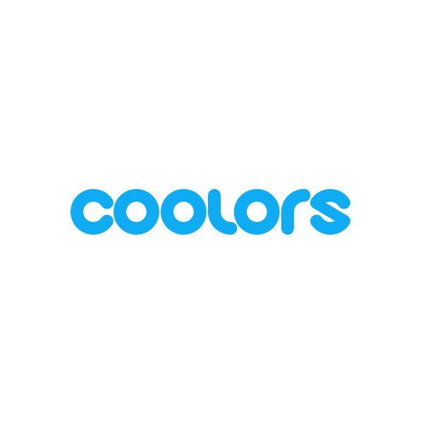

Here, you will find some of my favorite weblinks.
-
Cookie Clicker

This website is a game that has a very self explanitory title: You click cookies.
-
Coolors

This website is an AI-powered website that generates appropriate color paletts and themes. You are also able to see what they would look like on a webpage. I especially like this website because it helps me with my UX projects and projects like these.
- Pointer Pointer